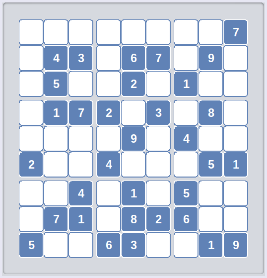
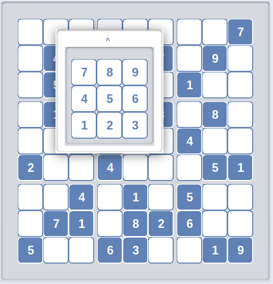
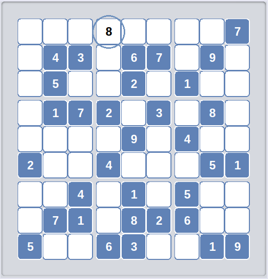
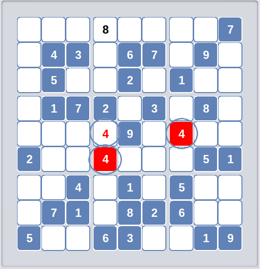
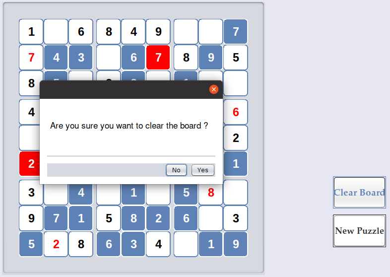
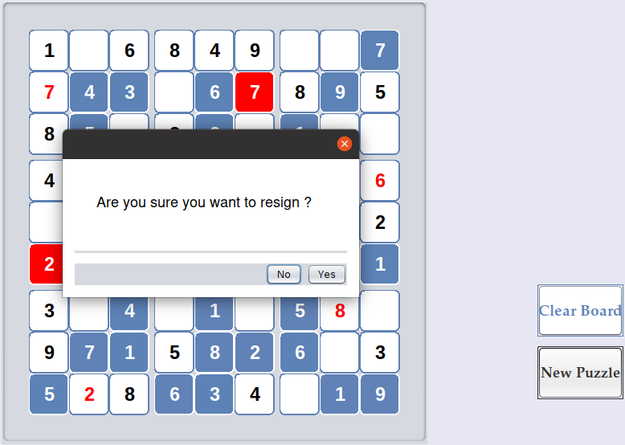

Sudoku...Puzzle

Sudoku, originally called Number Place is a logic based, combinatorial number- placement puzzle. In classic Sudoku, the objective is to fill a 9 × 9 grid with digits so that each column, each row, and each of the nine 3 × 3 subgrids that compose the grid (also called "boxes", "blocks", or "regions") contain all of the digits from 1 to 9. A partially completed grid is provided, which for a well-posed puzzle has a single solution.
Fill up a cell in the grid.
Click on an unfilled cell and choose any digit from the popup window.

In case the digit is safe in its corresponding cell, it will be colored in black
In case it's not, all the digits unsafe as a result of it will be colored in red
 
Clear Board.
Click on Clear Board to reset the board to original condition.

New Puzzle.
Click on New Puzzle to solve a new puzzle. Old puzzle will be considered unsolved (loss).

Note. This is a one sitting game i.e. you cannot save it and solve later.